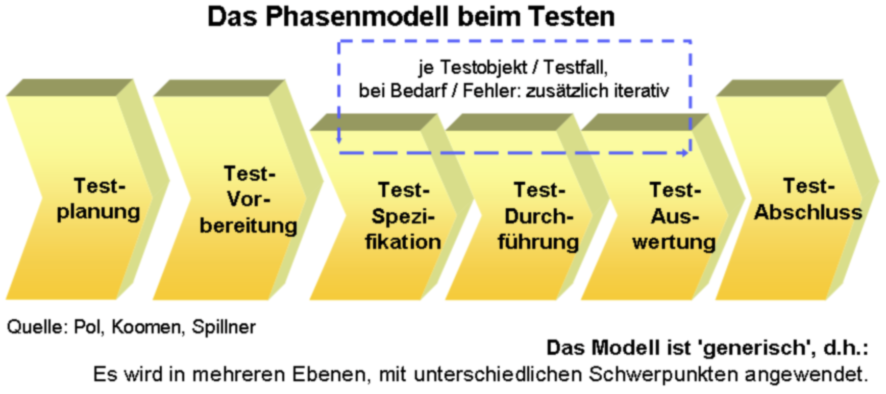

{% extends "../_base_template.html" %}
{% block title %}Lektion 19 - Software Testing{% endblock %}

{% block sections %}
<section data-markdown>
<textarea data-template>
<i class="fas fa-graduation-cap"></i> Nachbesprechung Fallstudie
=============================

Ich möchte nur kurz auf die Fallstudie eingehen. Ihre Noten haben Sie ja bereits erhalten.

* Haben SIE konkrete Fragen / Inputs?
* OOA: Use-Cases und Klassendiagramm
* OOD: die erwarteten Design-Pattern

</textarea>
</section>

<section data-markdown>
<textarea data-template>
<i class="fas fa-graduation-cap"></i> Software Testing
=============================

Ziel
-----

* Sie wissen, was „Software-Testing“ bedeutet
* Sie kennen verschiedene Test-Methoden
* Sie können Systemtests aus Use-Cases / Szenarien ableiten
</textarea>
</section>

<section data-markdown>
<textarea data-template>
<i class="fas fa-comments"></i> Ideensammlung - Software-Tests
=============================

Sie erhalten von Ihrem Chef den Auftrag, einen Teil des Bibsys-Systems zu testen:

> "Testen Sie die Login-Funktionalität. Es ist eine der wichtigsten Funktionen, welche funktionieren muss!"

Nun, aber was heisst das nun genau? Sammeln Sie in folgendem Padlet Ideen dazu:


* **WAS** testen Sie (hier / bei Software)? Beschreiben Sie, welche Aspekte des Programmteils Sie testen!
* **WIE** testen Sie (Methode, Vorgehen)? Welche Möglichkeiten haben Sie / kennen Sie, um diese Tests durchzuführen?
  * Wenn Sie unterschiedliche Aspekte testen, denken Sie auch an unterschiedlichen Vorgehensweisen beim Testen!
* **Was fehlt Ihnen bei der Formulierung Ihres Chefs zum Testing-Auftrag?**

Halten Sie Ihre Ideen / Stichworte in folgendem Padlet fest:

https://padlet.com/alex_schenkel/m326_testing

</textarea>
</section>

<section>
<section data-markdown>
<textarea data-template>
<i class="fas fa-graduation-cap"></i> Software Testing
=============================

**Stichwortsammlung**:

### Warum testen wir Software / Was gibt es bei Software zu testen?

* Funktionalität
* Auftreten von Bugs
* Erfüllen von Spezifikationen
* Performance
* Sicherheit
* Usability / Accessibility
* gleichzeitige Zugriffe
* Kompatibilität
* Installation
* ... und noch viel viel mehr!


</textarea>
</section>
<section data-markdown>
<textarea data-template>
<i class="fas fa-graduation-cap"></i> Software Testing
=============================

**Stichwortsammlung**:

### Welche Test-Arten kennen Sie?


| Test-Methode | Beschreibung |
|--------------|--------------|
| Debugguing   | mit Entwickler-Tools während des Programmierens, Fehlersuche |
| Unit-Tests | automatisierte Tests von einzelnen Funktionen, Klassen |
| Integrationstests | "Zusammenspiel" grösserer Teile, automatisch oder manuell |
| Regressionstests | Wiederholen von Testfällen, um eingeschlichene Fehler zu finden |
| Systemtests | Gesamtsystem wird getestet, manuell oder automatisch |
| Schnittstellentests | z.b. Web-API, meist automatisiert |
| UI-Tests | funktioniert das User-Interface (automatisch möglich)? Kann es gut bedient werden (nur manuell möglich)?  |
| Web- resp. Browsertests | Läuft die Seite in allen Browser(-Versionen)? |
| ... und noch viele mehr! ||

<i class="fas fa-arrow-alt-circle-right"></i> **Software-Testing ist ein sehr weiter Begriff und wird ganz unterschiedlich interpretiert.**

englische Quelle zum Thema: https://de.wikipedia.org/wiki/Softwaretest

</textarea>
</section>
</section>

<section>
<section data-markdown>
<textarea data-template>
<i class="fas fa-graduation-cap"></i> Test-Methoden
=============================

<i class="fas fa-lock-open"></i> White-Box Testing
-------------------

* testet interne Strukturen oder Abläufe eines Programms
* Kenntnis des Programmcodes sind notwendig
* Der Tester definiert Input-Werte, um bestimmte Code-Pfade zu testen und mit dem erwarteten Output zu vergleichen.

Verwendung normalerweise bei:
* Unit-Tests
* Integrations-Tests (Zusammenführen von grösseren Code-Teilen)
* API-Tests
* Code-Coverage
* offene Penetration Tests (Angriffsversuche durch Code-Analyse)
</textarea>
</section>

<section data-markdown>
<textarea data-template>
<i class="fas fa-graduation-cap"></i> Test-Methoden
=============================

<i class="fas fa-lock"></i> Black-Box-Testing
-------------------

* testet die Software als „Black Box“, um die Funktionalität mit den Anforderungen zu vergleichen.
* es besteht kein Zugriff auf den Programmcode oder Wissen um die internen Strukturen
* Die Tester wissen nur, was „das Programm tun soll“
* „Test Cases“ beschreiben Input, Output und Vorgehen zum Testen.

Verwendung normalerweise bei:

* System-Tests
* Spezifikations-Tests
* User-Acceptance, Abnahme-Tests
* End-to-End-Tests (ganzes System bis und mit User-Interaktion)

<i class="fas fa-arrow-alt-circle-right"></i> **zu beiden Methoden gibt es sowohl manuelle wie auch automatisierte Test-Verfahren**

</textarea>
</section>
</section>

<section data-markdown>
<textarea data-template>
<i class="fas fa-graduation-cap"></i> Test-Methoden während der Software-Entwicklung
=============================

Jede Stufe der Software-Entwicklung erfordert eine andere Test-Methode.
Die entsprechende Entwicklungsstufe wird durch eine Test-Methode geprüft:


<i class="far fa-hand-point-right"></i> Als Grundsatz gilt: Je weiter "oben" Sie testen wollen, desto kompexer / komplizierter sind die Tests:

UI-Tests (Abnahme und Nutzung) sind um ein Vielfaches komplizierter als Unit-Tests (Software-Entwurf/Programmieren)
</textarea>
</section>


<section data-markdown>
<textarea data-template>
<i class="fas fa-graduation-cap"></i> Test-Phasen / Prozess
=============================

Das Testen von Software durchläuft mehrere Phasen, welche bei Bedarf auch iterativ (wiederholend) angewendet werden:



* Während der **Testplanung** erstellen Sie ein **Testkonzept**
* für die **Testdurchführung / Auswertung** erstellen Sie ein **Testprotokoll**.

Definition / Inhalt der Phasen: siehe

**https://de.wikipedia.org/wiki/Softwaretest#Testplanung**
</textarea>
</section>

<section data-markdown>
<textarea data-template>
<i class="fas fa-graduation-cap"></i> Testkonzept und Testprotokoll
=============================

Software-Tests bestehen immer aus zwei Teilen:

* Das **Testkonzept** beschreibt, was wie mit welchen Daten getestet werden soll, und definiert die Test-Infrastruktur.
* Das **Testprotokoll** dient dem Festhalten der Durchführung der Tests: Wer hat die Tests wann durchgeführt, mit welchem
  Ergebnis.

Ziel ist immer die **Nachvollziehbarkeit**: Die Tests müssen reproduzierbar sein, also genau so wiederholt werden können.

Das IT-Framework **HERMES** (http://www.hermes.admin.ch/) bietet Ihnen dazu viele Informationen und Vorlagen.
Die Unterlagen rund ums Testing finden Sie hier:


https://www.hermes.admin.ch/de/projektmanagement/verstehen/aufgaben/test-durchfuhren.html

Wir schauen uns kurz das Testkonzept und -Protokoll von Hermes an.

</textarea>
</section>


<section data-markdown>
<textarea data-template>
<i class="fas fa-graduation-cap"></i> Systemtest / Testfall erarbeiten
=============================

Wir erarbeiten **einen Testfall** für **manuelle Systemtests** am Beispiel BibSys:

* Grundlage für einen Testfall dient ein __Use-Case__, resp. ein bestimmtes __Szenario__ des Use-Cases.
* Der Testfall deckt das Szenario ab, und besteht aus einzelnern **Test-Schritten**.
* Das Szenario wird in einzelnen **Test-Schritten** beschrieben, durchgeführt und kontrolliert.
* Es wird unterschieden zwischen **„konstruktiven“** und **„destruktiven“** Testfällen:
  * konstruktive Tests decken das Szenario so ab, wie beschrieben.
  * destruktive Tests versuchen, anhand von Fehleingaben / Fehlverhalten das Szenario „zu sprengen“, resp. testen das Verhalten bei Fehleingaben / Störungen.
* Das Test-Protokoll eines Testfalles besteht aus einzeln durchzuführenden Schritten, mit folgenden Informationen:
  * Schritt-Nr.
  * Kurzbeschreibung/Titel
  * Vorbedingungen, Eingabeparameter (z.B. „als User X durchführen“)
  * genaue Beschreibung des Tests (Ablauf, auszuführende Schritte …)
  * erwartetes Ergebnis
  * tatsächliches Ergebnis

<i class="fas fa-arrow-alt-circle-right"></i> Erarbeiten Sie den Testfall für den Use Case **„Medium am Terminal ausleihen“**,
siehe Moodle vom 27.August 2020 - Analysemodell, Use-Cases: https://moodle.bztf.ch/course/view.php?id=1295#section-3

Als Vorlage dient Ihnen die [ Testfall-Vorlage ](https://moodle.bztf.ch/mod/resource/view.php?id=50195) auf Moodle.
</textarea>
</section>
{% endblock %}
